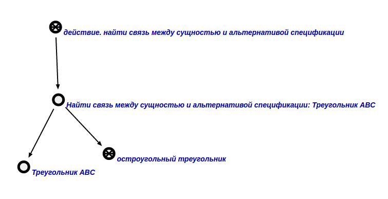
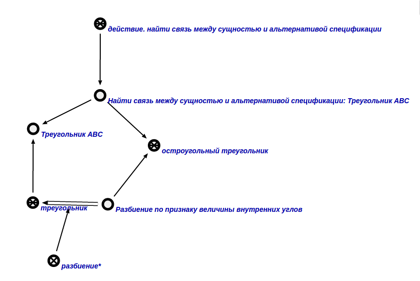

Команда нахождения связи между сущностью и альтернативой спецификации предназначена нахождения связи между сущностью и альтернативой спецификации. Первым входным аргументом команды является сущность, для которой требуется найти связь с альтернативой спецификации. Второй аргумент - сама альтернатива спецификации указанной сущности. Входные аргументы и результат выполнения команды показан ниже:

Рис 1. Входные аргументы

Рис 2. Результат выполнения команды